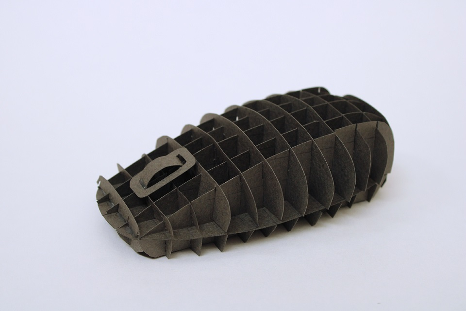
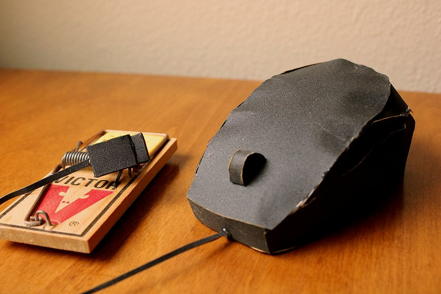
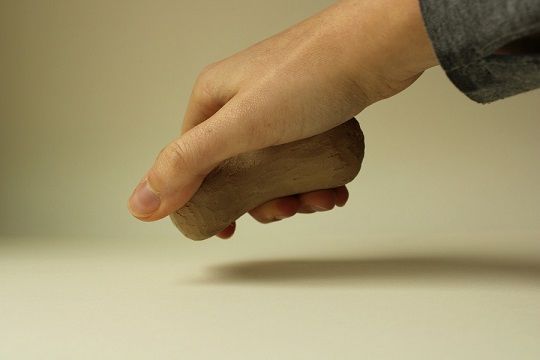

Week 2: Bamboo Bridge
The first project of my ART117: 3D Design class was a bamboo bridge. The project
tested my ability to build a creative design while facing several design constraints:
- The bridge must span six feet
- The bridge must be constructed with only 100 or less bamboo skewers
- The bridge must be glued together with only 10 or less mini glue gun sticks
After a lot of calculations, sketches, and thinking, I decided upon a bridge design
that could span a little more than six feet with only 100 bamboo skewers. I hoped
that the truss design would help fortify it for the ultimate test: adding weight.
Balancing it on either side by a stack of encyclopedias, I slowly loaded the bridge with
small tuna and chicken cans. After about 3 pounds and 16 ounces of weight, the bridge
snapped at a few joints on one end of the bridge, in a place that I least expected.
By: Kailey Slocum | Fall 2020 | Week 2
Week 3: Elements of Design
This week’s project was an exploration of the elements of design and the execution of
these elements through five clay models.
1. Asymmetry
2. Symmetry
3. Plane
4. Texture
5. Tension
By: Kailey Slocum | Fall 2020 | Week 3
Week 4: Paper Planes
Week 4 began a series of three related projects that all focused on the form of a chosen object.
I chose a computer mouse as my object.
The first part of this assignment was an exact replica of the object using stiff paper.
Becoming extremely familiar with this mouse, I measured and studied it so that I could
re-make it out of paper.

By: Kailey Slocum | Fall 2020 | Week 4
Week 5: Scale and Proportion
The second part of my three-part assignment involving my chosen object (a computer mouse)
was the making of a replica of my mouse by using cardboard and hot glue.
This replica, unlike my first, was not built with the same ratio of 1:1. Instead, I chose
to build it differently in order to play with its scale and proportion. Inspired by
the adjective 'playful', I designed this computer mouse to be a much greater scale
and a rounder proportion. I created a curlicue with the cord and a rounded hump for
the body of the mouse in order to further exaggerate this idea.
By: Kailey Slocum | Fall 2020 | Week 5
Week 6: Material Shift
The third part of my computer mouse assignment was a re-making of this object a third time,
but with a unique medium of my choice.
I tried to build this mouse to be close to the exact size of a regular mouse, but I used
sandpaper and foam to create it. Computer mice are usually hard and smooth, so the
use of sandpaper and foam creates an ironic feeling of softness and roughness that is
uncharacteristic of this object.

By: Kailey Slocum | Fall 2020 | Week 6
Final Project: Prototype Project
My final project for ART 117: 3D Design was the construction of a customized craft knife handle.
Each week, from Week 7 to 10, I completed a new portion of the assignment until it was fully
made. Week 7. This week I drew out 20 different handle designs, and then selected my 10 favorite designs.
Week 8: this week I picked my four favorite designs out of the 10 and then created a rough model of
them out of modeling clay.

Week 9: This week I selected my two favorite designs out of the four and polished the clay models,
adding textures to them.

Week 10: This week I selected my final hand design and created a silicone mold.

After the mold had set, I cut it open, removed the clay model, taped it back together, and poured the plastic mixture inside.
After the plastic hardened, I removed the handle from the mold, sawed off the pouring spout, and sanded it down.
After gluing the craft knife section into the handle, it was done!
By: Kailey Slocum | Fall 2020 | Final Project